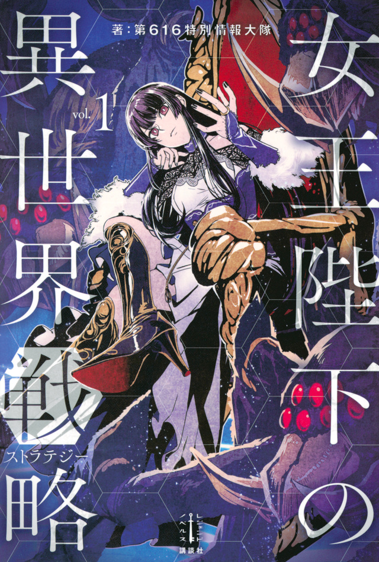

Her Majesty's Swarm
Novel Info's
Status: Ongoing
Genre: Action, Adventure, Drama, Fantasy, Horror, Mystery, Psychological, Seinen, Tragedy
Author: 616th Special Information Battalion
Illustrator: Iwamoto Eiri
Volumes: 4, Legend Novels
Original Publisher: Kodansha
English Publisher: J-Novel Club
Fan Translation: N/A
Description/Sypnosis
Our protagonist is a college student who enjoys playing as the evil-aligned faction Arachnea in her favorite real-time strategy game. One day, she finds herself in a world similar to the one in the game; additionally, her body is now that of a fourteen-year-old girl.
While things are a bit different from how they were in the game, one element has remained the same: she is the leader of the Arachnea. The insects under her control, collectively known as the Swarm, praise her and implore her to lead them to victory. In order to survive, she raises her Swarm and forms friendly relations with the elves of the neighboring forest.
But after a s*aver traveling through the forest murders one of her Swarm and the nearby kingdom’s knights burn down the elven village and massacre its people, she prepares to launch her counterattacks in the name of revenge. However, revenge is merely a pretense for attacking the countries of this world. Her command is masterful and severe, as one who has played the game in real life…
Download Links
Epub & Pdf